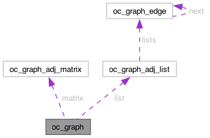

OmniC
A hyper-functional C utility library
Loading...
Searching...
No Matches
oc_graph Struct Reference
Collaboration diagram for oc_graph:

[
legend
]
Public Attributes
size_t
num_vertices
size_t
num_edges
bool
directed
oc_graph_repr_t
repr_type
union {
oc_graph_adj_matrix_t
matrix
oc_graph_adj_list_t
list
}
repr
double
density_threshold
The documentation for this struct was generated from the following file:
include/omnic/
graph.h
oc_graph
Generated by
1.15.0
 1.15.0
1.15.0